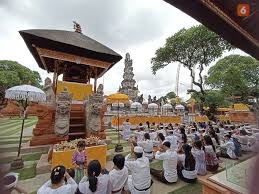
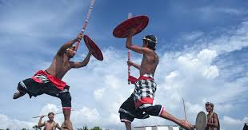

Tradisi di Bali

Upacara Saraswati
Upacara Saraswati yang diperingati setiap 6 bulan sekali penting dilakukan khususnya untuk para siswa sekolah dan penggelut dunia pendidikan.

Melasti
Melasti merupakan ritual ibadah untuk menyambut hari raya Nyepi. Sebelum merayakan hari raya Nyepi, para umat Hindu melaksanakan upacara Melasti yang merupakan ritual penyucian diri.

Gebung Ende Seraya
Di Desa Seraya, Kabupaten Karangasem, Bali, ada sebuah tradisi unik bernama Gebug Ende Seraya. Tradisi ini merupakan perang rotan yang sudah dilakukan turun-temurun dan masih dilestarikan hingga saat ini.